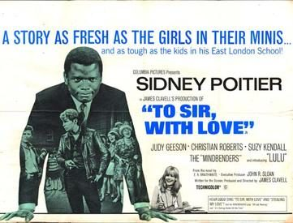
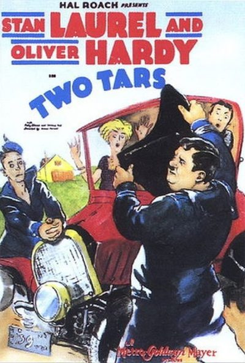

THE STANFORD THEATRE
Now Showing
·
Upcoming
·
Past
·
Search
July 9 - September 16, 2022
Summer 2022
21 bills
July 9 - 10
The Gay Divorcee (1934)
107 min
Top Hat (1935)
101 min
July 14 - 15
It Started with Eve (1941)
90 min
One Hundred Men and a Girl (1937)
84 min
July 16 - 17
Casablanca (1942)
102 min
In a Lonely Place (1950)
94 min
July 21 - 22
The Miracle of Morgan's Creek (1944)
99 min
Christmas in July (1940)
67 min
July 23 - 24

To Sir, With Love (1967)
106 min
In the Heat of the Night (1967)
109 min
July 28 - 29
Rear Window (1954)
112 min
To Catch a Thief (1955)
106 min
July 30 - 31
Sabrina (1954)
113 min
Beat the Devil (1953)
89 min
August 4 - 5
A Tree Grows in Brooklyn (1945)
128 min
The Curse of the Cat People (1944)
70 min
August 6 - 7
Meet Me in St. Louis (1944)
113 min
The Wizard of Oz (1939)
102 min
August 11 - 12
High Noon (1952)
85 min
Morocco (1930)
88 min
August 13 - 14
The Philadelphia Story (1940)
108 min
Dinner at Eight (1933)
111 min
August 18 - 19
Only Angels Have Wings (1939)
121 min
The Talk of the Town (1942)
119 min
August 20 - 21
The Hidden Fortress (1958)
139 min
Yojimbo (1961)
110 min
August 25 - 26
Laura (1944)
88 min
Shanghai Express (1932)
80 min
August 27 - 28
North by Northwest (1959)
136 min
Notorious (1946)
102 min
September 1
Safety Last (1923)
73 min

Two Tars (1928)
21 min
September 2
The General (1926)
75 min
Big Business (1929)
19 min
September 3 - 4
Roman Holiday (1953)
118 min
Bread, Love and Dreams (Pane, Amore e Fantasia) (1953)
93 min
September 8 - 9
The Mark of Zorro (1940)
94 min
A Tale of Two Cities (1935)
120 min
September 10 - 11
My Fair Lady (1964)
171 min
September 15 - 16
Ran (1985)
157 min
Archived calendar page
·
Original
·
All past festivals